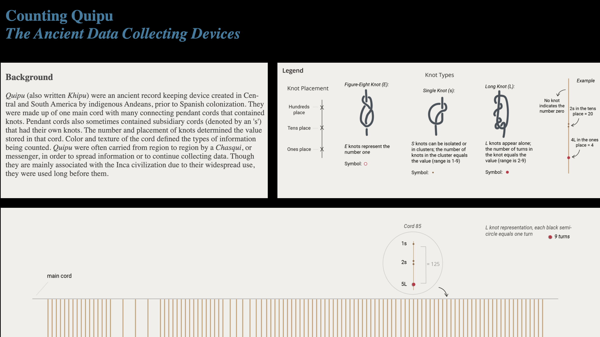
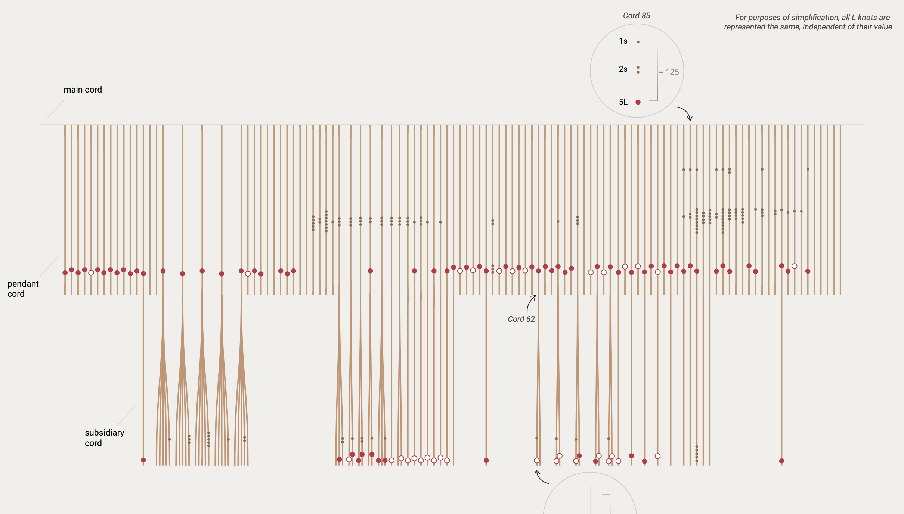
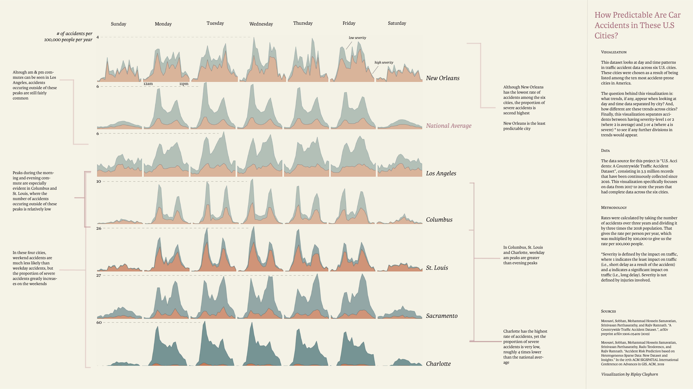
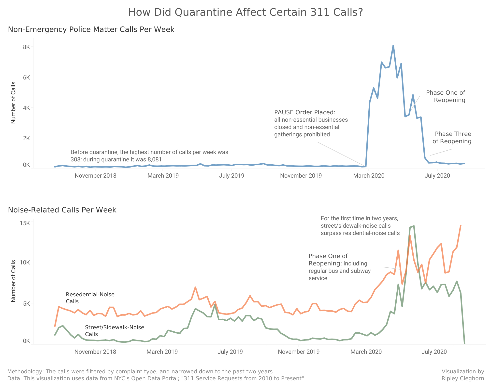
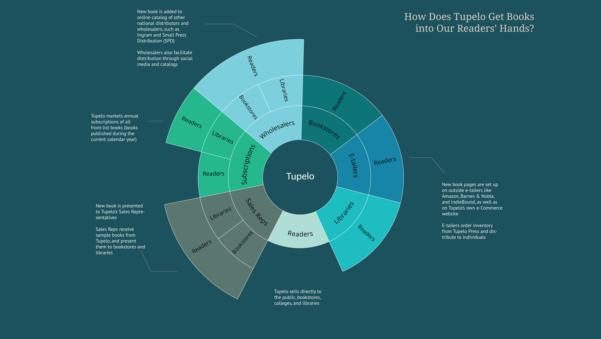
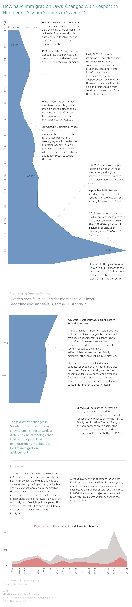

Portfolio

This infographic illustrates one of the objects from the Smithsonian, as part of my Major Studio course. 

This graphic explores traffic accident patterns in six U.S. cities.

This visualization explores the effect of quarantine on 311 noise-related calls reported by the NYPD.

This graphic was created for Tupelo Press, and illustrates the cycle of a book, focusing on distribution by independent literary presses.

This timeline was created as part of the CGDV hackathon.